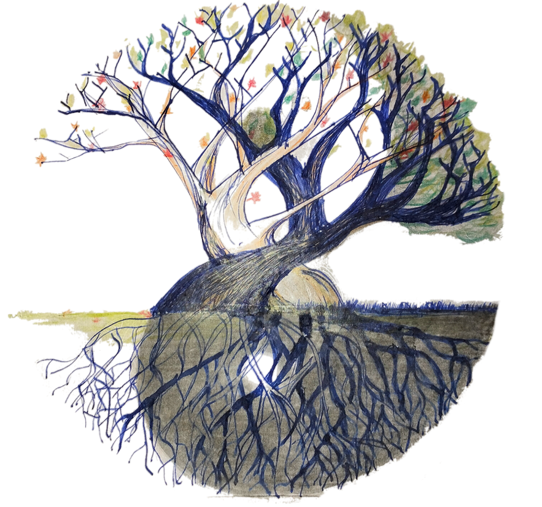
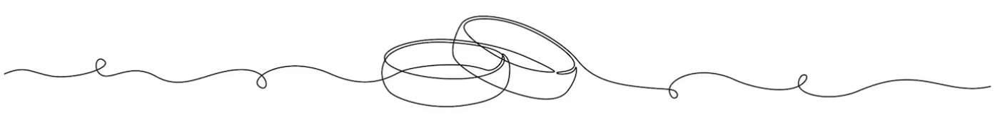

Menu
Le 28 juin 2025
Buffet Entrée
Le coin du potager et salades
Trio de légumes du marché
Salade Grecques à la féta
Salade Alsacienne
La planche des saveurs Ibérique
Jambon Serrano
Lomo séché
Chorizo Cular
Cornichons, petits oignons, olives noires, piquillos et Comté affiné
Terrine de campagne rôtie au four
Le côté mer
Dos de cabillaud à l’aïoli doux
Plat principal
Jambon à la broche
Accompagnement : Pommes de terre en robe des champs & fromage blanc aux herbes
Le buffet des fromages
Un éventail de 8 fromages affinés
Dessert
Pièce montée traditionnelle
Salade de fruits frais
Boissons
Pétillant et vins blanc Regnier Pagny sur Moselle
Côtes de Bx Cadillac rouge et réserve Chateau Montgaillard
Jus de fruits et eaux minérales
